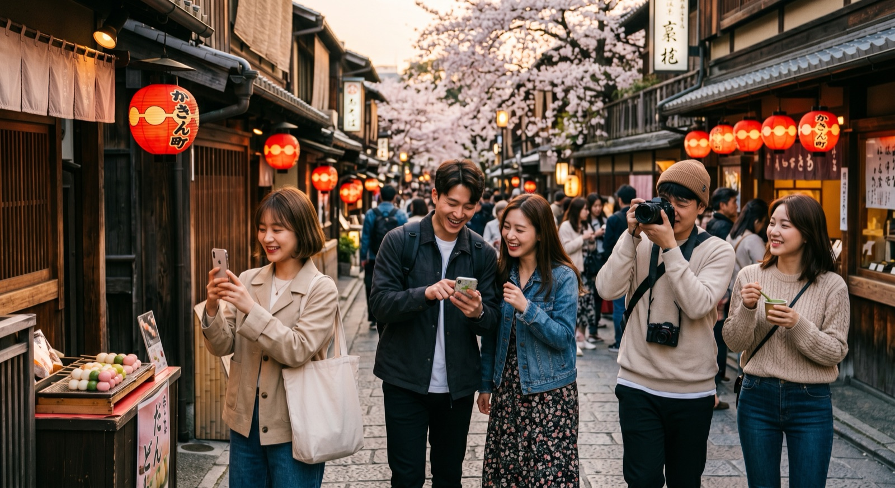
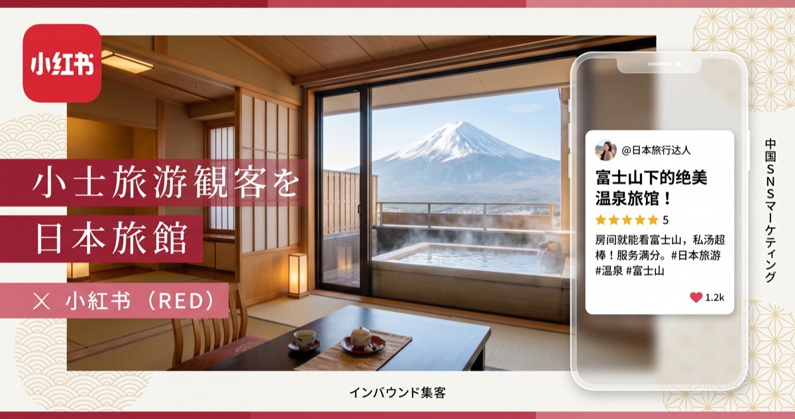
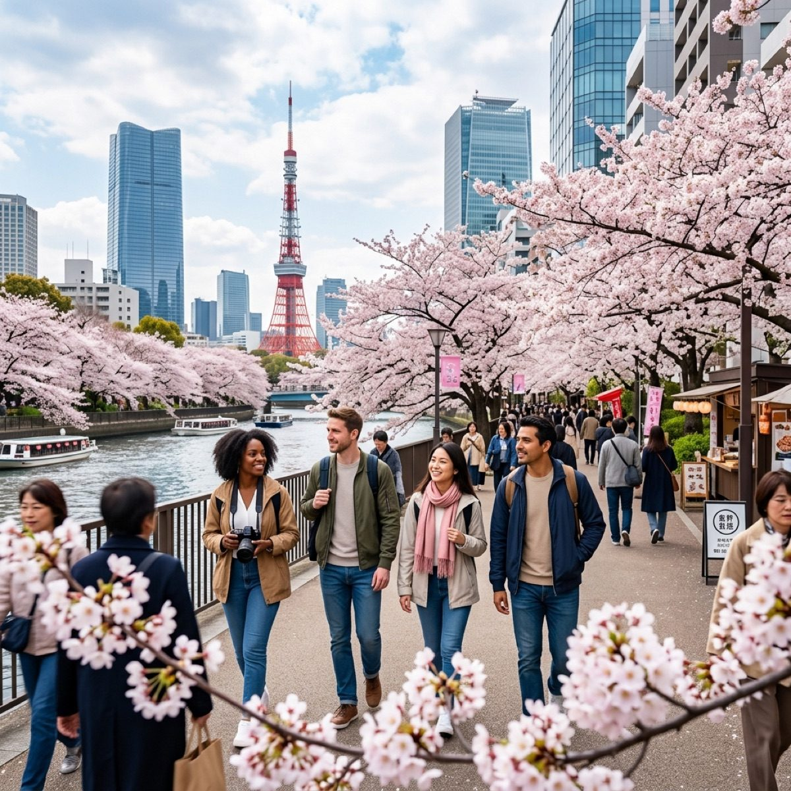
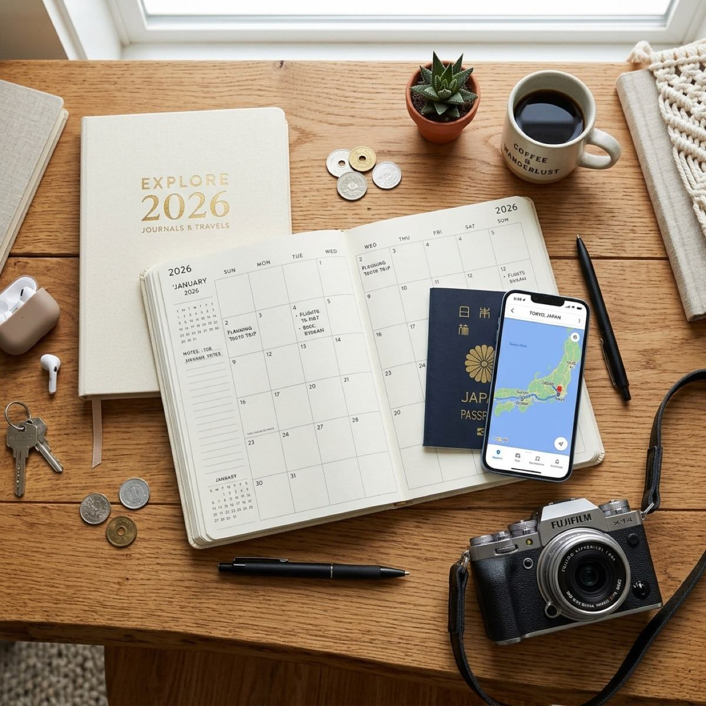
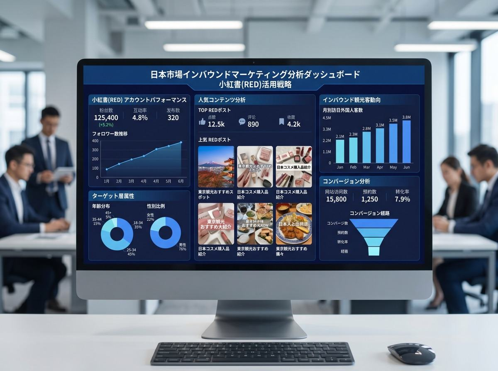
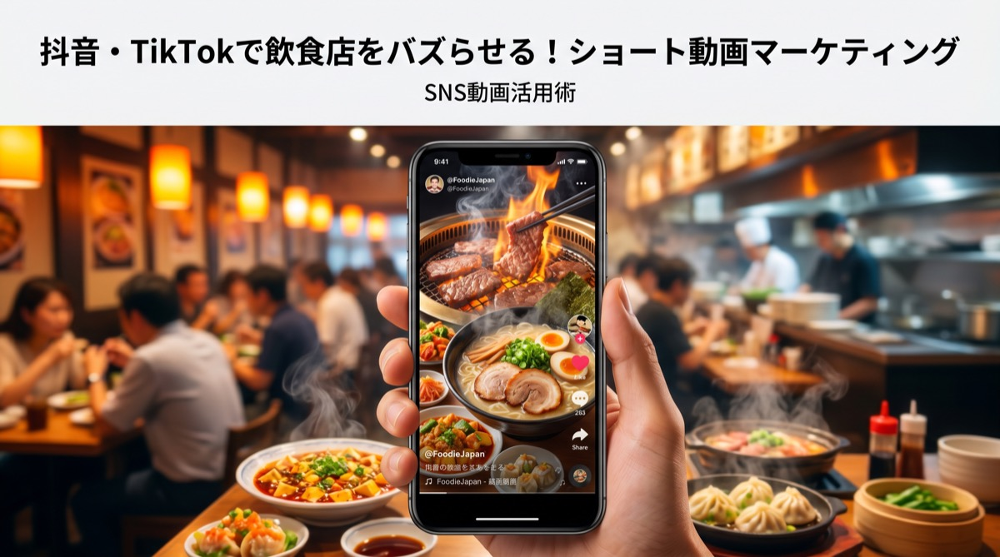
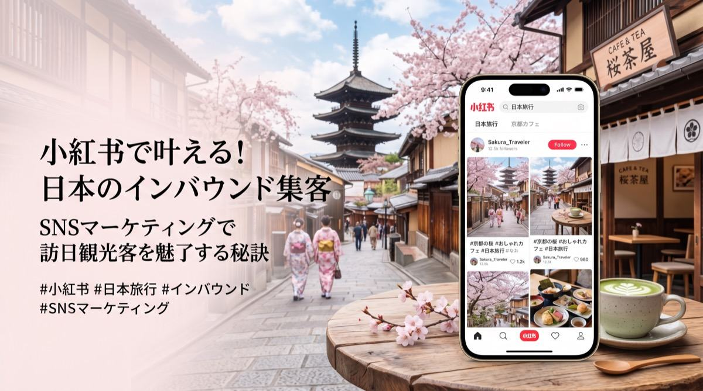
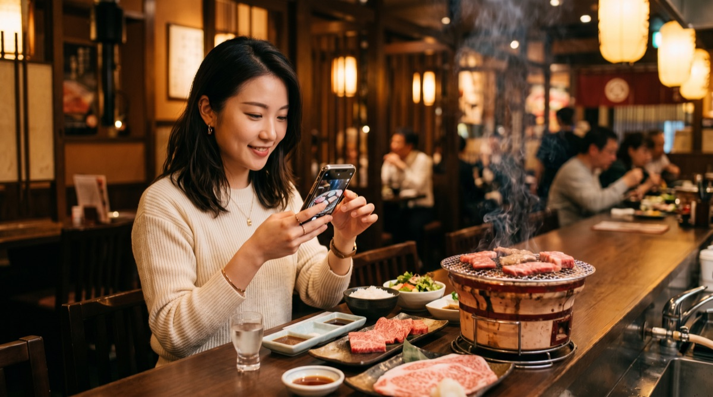
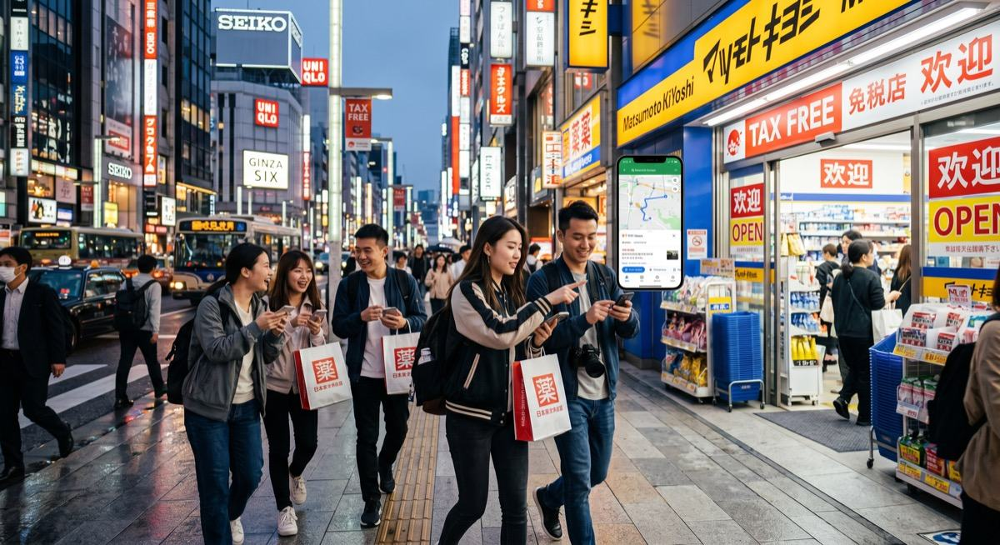

ブログ
ブログ
小紅書マーケティング・訪日集客・Web開発の最新情報
PROTECH Editorial Team
中国SNS・インバウンド実務に基づく情報を発信しています。
記事はPROTECH編集部が企画・確認し、必要に応じて公的統計、媒体公式情報、実務支援で得た知見をもとに更新します。
Topic Paths
目的別に読む
最初に読む記事、比較すべきサービス、次に相談すべきページをテーマごとに整理しました。

【2026年秋】日本で絶対行くべき紅葉・観光スポット10選｜秋の絶景完全ガイド
2026年秋に訪日観光客が絶対に訪れるべき日本の観光スポット10選を厳選。京都の歴史ある寺院から、北海道の大自然、息をのむ峡谷美まで、見どころ・アクセス・ベストシーズンを徹底解説します。

【2026年保存版】日本の花火大会おすすめ15選｜開催日程・打上数・アクセスを完全網羅
2026年夏に開催される日本全国の花火大会おすすめ15選を厳選紹介。隅田川・長岡・大曲など、開催日時・打上数・有料席・アクセス情報を完全網羅。インバウンド観光客にも人気の花火イベント情報。

【2026年夏】日本で絶対行くべき観光スポット15選｜穴場から定番まで完全ガイド
2026年夏に訪日観光客が絶対に訪れるべき日本の観光スポット15選を厳選。花火大会・絶景ビーチ・避暑地・夏祭りなど、エリア別に見どころ・アクセス・ベストシーズンを徹底解説します。

訪日韓国人向けインバウンドマーケティング戦略【2026年最新】NaverブログとInstagramを活用した集客方法
訪日外国人数2位の韓国人観光客を集客するインバウンドマーケティング戦略を解説。NaverブログやInstagram・KakaoTalkの活用法、韓国人旅行者の消費行動データ・おすすめ施策まで2026年最新情報をお届け。
インバウンド集客の費用・料金相場【2026年最新】中国SNS・KOL・代行サービス別に徹底解説
インバウンド集客にかかる費用を徹底解説。小紅書・大衆点評・WeChat・KOL起用・代行会社の料金相場を比較。予算別の最適な施策選びに役立つ2026年最新ガイド。
WeChat（微信）マーケティングとは？【2026年最新】日本企業向け完全ガイド
WeChat（微信）を活用したインバウンド集客の完全ガイド。公式アカウント・ミニプログラム・WeChatペイの仕組みから、日本企業の導入事例・費用まで徹底解説【2026年最新版】。
【2026年最新】訪日外国人旅行の現状と課題：6,000万人達成に向けた地方誘客とインバウンド戦略
訪日外国人旅行客（インバウンド）の最新動向と、7都道府県に集中するオーバーツーリズムの課題。6,000万人達成に向けたJATAの提言と、地方誘客のための具体的なSNS集客戦略を解説します。
インバウンド需要とは？2026年最新の動向・経済効果・重要性を解説
インバウンド需要の定義や、なぜ今日本企業にとって重要なのか、2026年の最新トレンドやインバウンド対策の基本をわかりやすく解説します。
小紅書で観光地・地方創生集客【2026年最新】中国人旅行者を地方に呼ぶ戦略と成功事例
小紅書（RED）を使って地方観光地・地域資源の魅力を中国人旅行者に伝える集客戦略を解説。コンテンツ作成のコツ・KOL活用・地方自治体の成功事例まで2026年最新情報。

【2026年最新版】美容サロン×小紅書集客完全ガイド：中国人観光客を呼び込む戦略
ヘアサロン・ネイル・エステが小紅書で中国人観光客を集客する方法。ビフォーアフター投稿・KOC活用・予約導線設計まで業種別に徹底解説。

【2026年最新版】小紅書（RED）でホテル業界の中国マーケットを攻略する方法
中国人旅行者の68%が小紅書でホテルを検索。OTA依存から脱却し、直接予約を増やすための小紅書運用・KOC活用・ホテル種別攻略ポイントを徹底解説。

小紅書アカウント運用の基本【2026年版】開設から投稿・分析まで日本企業向け完全ガイド
小紅書（RED）のアカウント開設・プロフィール設定・投稿ルール・ハッシュタグ戦略・分析まで、日本企業向けに2026年最新の運用基本を徹底解説します。

【2026年最新版】美容サロン×小紅書集客完全ガイド：中国人観光客を呼び込む戦略
美容サロン・ヘアサロン・エステが小紅書（RED）で中国人観光客を集客する方法を徹底解説。2026年最新データ・ビフォーアフター投稿戦略・KOC活用・予約導線設計まで、美容業界向けインバウンド集客ガイド。

小紅書でホテル集客【2026年版】開設から投稿・分析まで日本企業向け完全ガイド
小紅書（RED）のアカウント開設・プロフィール設定・投稿ルール・ハッシュタグ戦略・分析まで、日本企業向けに2026年最新の運用基本を徹底解説します。

【2026年3月最新】訪日客361万人で過去最高！桜需要で欧米・東南アジアが急伸長
JNTOの最新統計をもとに、2026年3月の訪日外国人動向を徹底解説。累計1000万人突破の背景や、欧米・東南アジア市場の伸び、中国市場の現状など、インバウンド集客に必要なデータをお届けします。
【台湾市場攻略】訪日台湾人観光客の最新動向と集客成功の秘訣
訪日インバウンド市場でトップクラスの重要度を誇る台湾。リピーターの多さや消費傾向などの最新動向から、SNS・口コミを活用した効果的な集客戦略まで詳しく解説します。

【2026年最新：インバウンド祝日カレンダー】外国人観光客が多い時期・月別の動向を徹底解説
インバウンド集客を成功させるには「いつ、どの国の人が来るか」を知ることが重要です。2026年の主要国の祝日カレンダーと月別の旅行動向をまとめました。

【2026年最新】小紅書(RED)アルゴリズム変更とEC強化を徹底解説！
2026年の小紅書（RED）はどう変わった？「検索エンジン化」するアルゴリズムや強化された越境EC機能など、中国マーケティングの最新動向をわかりやすく徹底解説します。
【2026年最新】AIとデータで勝つインバウンド集客：量から質への転換・DX戦略の正解
2026年、日本のインバウンド市場は「集客数」から「消費単価」への転換点を迎えました。テクノロジーを活用した高単価マーケティングやDX戦略の正解を解説します。

大衆点評（ダージョンディエンピン）とは？簡単な使い方とマーケティング活用法
中国からインバウンド客を呼び込みたいときに役立つ「大衆点評」について解説します。簡単な使い方からマーケティングでの活用方法をご紹介。
訪日外国人の消費行動データ分析【2026年最新】国籍別・カテゴリ別の傾向と集客への活かし方
訪日外国人の消費行動を国籍別・カテゴリ別に徹底分析。中国・韓国・台湾・欧米別の購買傾向・消費額データから、インバウンド集客戦略に活かすポイントまで2026年最新情報。

抖音・TikTok運営で飲食店のインバウンド集客を増やす方法
飲食店にとって中国版TikTok「抖音・TikTok（Douyin）」は強力なインバウンド集客ツールです。抖音・TikTokの特徴と、飲食店が実践すべき運営ノウハウを解説します。
インバウンドとは？意味・訪日外国人動向・中国向けマーケティング戦略まで完全解説【2026年】
ニュースでよく聞く「インバウンド」の本来の意味や使い方、さらに日本企業の成長に欠かせない中国向けインバウンド対策の基本を詳しく解説します。

WeChat小程序（ミニプログラム）開発の費用と期間の目安
日本企業がWeChat小程序（ミニプログラム）を開発する際の費用相場や期間、必要な準備について解説します。インバウンド集客や越境ECに必須のツールです。

小紅書（RED）とは？完全ガイド【2026年】特徴・使い方・日本企業の活用法まで徹底解説
小紅書（RED）とは何か、基本的な仕組みから月間3億人超のユーザー層、アルゴリズム、インバウンド集客・中国向けマーケティングへの活用法まで完全解説。日本企業が今すぐ始めるべき理由とは。
小紅書運用代行を選ぶ際の7つのチェックポイント
小紅書の運用を外部に委託する際、失敗しないために確認すべき7つのポイントを解説。実績・体制・レポーティングなど、代理店選びで見落としがちな観点を整理しました。
越境ECで成功するためのポイントとは？日本の成功事例とおすすめの決済・物流手法
越境ECを成功に導くための具体的なポイントや、日本企業の実際の成功事例を詳しく解説。失敗しないための決済システム・物流手法の選び方からSNS集客まで、実践的なノウハウをお届けします。
Alipay・WeChat Pay導入ガイド【2026年最新】インバウンド向けキャッシュレス決済の始め方と費用
訪日外国人向けにAlipay（支付宝）・WeChat Pay（微信支付）を導入する手順・費用・審査を徹底解説。中国人観光客の9割が使うQR決済を導入しないと起きる機会損失も。2026年最新情報。
【2026年最新版】越境EC市場規模のまとめ！日本・中国・アメリカの動向
世界中で拡大し続ける越境EC市場。2026年最新のデータに基づき、日本・中国・アメリカの3大市場の規模や特徴、トレンドを徹底比較・解説します。企業のグローバル戦略に必見の市場レポートです。
KOLとは？KOCとの違い・起用メリットから中国プロモーションの費用相場まで徹底解説【2026年最新】
中国マーケティングで欠かせない「KOL」の意味やKOCとの違い、起用するメリット・デメリット、さらに2026年最新の費用相場からキャスティングの注意点までを専門家がわかりやすく解説します。
越境ECとは？【2026年版】メリット・デメリット・始め方・必要な準備を徹底解説
越境EC（越境Eコマース）とは何か？基本的な意味から、日本企業が取り組むべきメリット・デメリット、そして始めるための具体的な準備や手順まで、2026年最新の情報を網羅して徹底解説します。
小紅書コンテンツ運用フローの作り方【2026年版】少人数チームでも続けられる仕組みづくり
企画、制作、レビュー、公開までを属人化させないためのフローとテンプレート活用法を紹介します。

KOLとKOCの違いとは？【2026年最新】小紅書マーケティング完全ガイド・費用相場まで
KOLとKOCの違いとは何か？定義・選定基準・費用相場・効果測定まで徹底解説。小紅書（RED）を活用したインフルエンサーマーケティングを日本企業が成功させるための実践ガイド。

小紅書で飲食店集客する方法【2026年最新】中国人観光客をリピーターにする実践ガイド
小紅書（RED）を使って飲食店のインバウンド集客を成功させる具体的な方法を解説。訪日中国人の約80%が飲食情報を小紅書で収集。アカウント設計・投稿戦略・KOC活用・大衆点評との連携まで、プロの実践ノウハウを公開します。

訪日中国人インバウンド集客：小紅書・大衆点評を組み合わせた導線設計の基本【2026年版】
認知から来店予約までの導線設計を、SNS・LP・店舗オペレーションの視点から整理します。

小紅書マーケティング2026年最新トレンド：日本企業が知るべき5つのポイント
2026年の小紅書運用で重要になるUGC設計、検索導線、ライブ配信、地域連携、CV計測の5点を解説します。

小紅書マーケティング2026年最新トレンド：日本企業が知るべき5つのポイント
2026年の小紅書（RED）マーケティング最新トレンドを解説。日本企業が中国市場で成功するために押さえるべき5つの重要ポイントをPROTECHが詳しくご紹介します。

小紅書アカウント運用の基本【2026年版】開設から投稿・分析まで日本企業向け完全ガイド
小紅書（RED）のアカウント開設・プロフィール設定・投稿ルール・ハッシュタグ戦略・分析まで、日本企業向けに2026年最新の運用基本を徹底解説します。